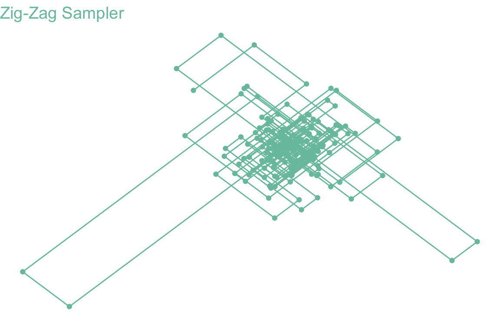

Poisson 過程を見てみよう
YUIMA パッケージを用いたシミュレーションを通じて
A Blog Entry on Bayesian Computation by an Applied Mathematician
$$
$$
初期分布を \(\nu\in\mathcal{P}(E)\) とする．
累積するジャンプを足し合わせた値として，畳み込み半群 \(\{\mu^{\otimes k}\}_{k\in\mathbb{N}}\) に対応する初期分布 \(\nu\) の Markov 連鎖 \(\{Y_k\}_{k=0}^\infty\) を用意する．
これと独立な指数確率変数列 \(\Delta_k\overset{\text{iid}}{\sim}\operatorname{Exp}(1)\) を用いて， \[ X_t:=\begin{cases} Y_0&0\le t<\frac{\Delta_0}{\lambda(Y_0)}\\ Y_k&\sum_{j=0}^{k-1}\frac{\Delta_j}{\lambda(Y_j)}\le t<\sum_{j=0}^{k}\frac{\Delta_j}{\lambda(Y_j)} \end{cases} \] と構成した過程 \(\{X_t\}_{t\in\mathbb{R}_+}\) が，\(\{e^{tA}\}\) に対応する Markov 過程になる．2
なお，\(\lambda(x)=0\) の場合は，ジャンプは起きないもの \(\frac{\Delta}{\lambda(x)}=\infty\) と解する．この場合は零過程である．一般に関数 \(\lambda\in\mathcal{L}_b(E)\) は位置 \(x\in E\) からのジャンプの起こりやすさを表していると思える．
\(\lambda=0\) の場合は零過程であるから， \[ \lambda:=\sup_{x\in E}\lambda(x)>0 \] とし，新たな確率核 \(\mu':E\to E\)を \[ \mu'(x,\Gamma):=\left(1-\frac{\lambda(x)}{\lambda}\right)\delta_x(\Gamma)+\frac{\lambda(x)}{\lambda}\mu(x,\Gamma) \] と定めると，生成作用素 \(A\) は \[ Af(x)=\lambda\int_E\biggr(f(y)-f(x)\biggl)\mu'(x,dy) \] とも表せる．
このとき，畳み込み半群 \(\{\mu'^{\otimes k}\}_{k\in\mathbb{N}}\) に対応する初期分布 \(\nu\) の Markov 連鎖 \(\{Y_k'\}_{k=0}^\infty\) は \(\{Y_k\}\) とは分布同等でない．
だが，この \(\{Y_k'\}\) に対しては，独立な Poisson 過程 \(\{V_t\}_{t\in\mathbb{R}_+}\) に対して \[ X'_t:=Y'_{V_t}\quad t\in\mathbb{R}_+ \] と構成される過程 \(\{X_t'\}_{t\in\mathbb{R}_+}\) はやはり \(\{e^{tA}\}\) に対応する Markov 過程である．
すなわち \(X\) は非一様な複合 Poisson 過程になる．
各点 \(x\in E\) に於て，レート \(\lambda(x)\) で，分布 \(\mu(x,dy)\) に従う点へとジャンプをする．4
具体的には，次のように整理できる：
強度測度 \(\lambda(x)\mu(x,dy)dx\) を持つ \(E^2\) 上の Poisson 点過程 \(\eta\) に対して， \[ \xi(A)=\int_{A\times E}y\,\eta(dxdy) \] で定まる非一様な複合 Poisson 点過程 \(\xi\) に対応する．
例えば \(E=\mathbb{R}\) のとき， \[ M_t:=\xi([0,t])=\int_0^t\xi(ds) \] が，所定の生成作用素 \(\{T_t\}\) を持つ加法過程になる．
\(\lambda\) を有界としているから，有界区間上でのジャンプ数は有限である．Gamma 過程 のように，\(\mathbb{R}\) の稠密部分集合上でジャンプを繰り返す，というようなことは起こり得ない．
Poisson 過程については次の稿も参照：
前節で調べた純粋跳躍過程に，決定論的な動きを加えた Markov 過程のクラスを，(Davis, 1984) 以来 区分的確定的 Markov 過程 (PDMP: Piecewise Deterministic Markov Process) と呼ぶ．
PDMP は拡散項を持たない Lévy 過程とも理解できる．5
実際，(Davis, 1984) は拡散過程に相補的なクラスとして導入し，(Davis, 1993) は PDMP が待ち行列，ポートフォリオ最適化，確率的スケジューリング，標的追跡，保険数理，資源最適化など，広く確率的モデリングと最適化において重要な役割を演じることを見事に描き出した．6
the class of “piecewise-deterministic” Markov processes, newly introduced here, provides a general family of models covering virtually all non-diffusion applications. (Davis, 1984)
実際，PDMP を用いた MCMC である Piecewise Deterministic Monte Carlo または連続時間 MCMC は，高次元データと大規模データセットに対する効率的なサンプリング法開発の鍵と目されている．
次の記事も参照：
PDMP は動きのモードが移り変わっても良い．これを表すパラメータ \(v\in K\) を導入する．7
このパラメータ空間上に，PDMP が動く範囲の次元を表す関数 \(d:K\to\mathbb{N}^+\) を導入し，パラメータが \(v\in K\) である際は，\(M_v\subset\mathbb{R}^{d(v)}\) として，積空間 \(M_v\times\{v\}\) 上を運動するものとする．
総合して，PDMP の状態空間を \(M_v\) の直和 \[ E:=\bigcup_{v\in K}M_v\times\{v\} \] と定める．8
\(\mathfrak{X}_v\) を \(M_v\) 上のベクトル場とし，積分曲線 \[ \frac{d \phi_v(x,t)}{d t}=\mathfrak{X}_v(\phi_v(x,t)), \] \[ \phi_v(x,0)=x \] が存在するとする．9
\(\lambda:E\to\mathbb{R}_+\) は \(s\mapsto\lambda(\phi_v(x,s),v)\) が局所可積分であるような関数とし， \[ \Lambda(t):=\int^t_0\lambda(\phi(s,x))ds \] で表す．
\(M_v\subset\mathbb{R}^{d(v)}\) の境界のうち，積分曲線が到達し得る部分を \[ \partial^*M_v:=\left\{y\in\partial M_v\,\middle|\,\exists_{t>0}\;\exists_{x\in M_v}\;\phi_v(x,t)=y\right\} \] で表し，その直和を \(\Gamma^*:=\bigcup_{v\in K}\partial^*M_v\times\{v\}\) とする．
さらにそのうち，正な確率を持って到達可能な部分を \[ \Gamma:=\left\{(y,v)\in\Gamma^*\mid\lim_{x\to y}\operatorname{P}_{(x,v)}[T_1=t^*(x,v)]=1\right\} \]
点 \((x,v)\in E\) からフローに従って運動した場合の境界 \(\Gamma^*\) への到達時刻を \[ t^*(x,v):=\inf\left\{t\ge 0\mid\phi_v(x,t)\in\partial^*M_v\right\} \] とする．
\(\lambda\) は局所有限であるから，有限時区間上でのジャンプ数は有限になる．境界への到達によるジャンプ数も同様の性質を満たすと仮定する．11
こうして得た PDMP は，Feller-Dynkin 過程であるとは限らないにも拘らず，時間的に一様な強 Markov 過程である．12
PDMP の拡張生成作用素は，ちょうど（有限な Lévy 測度を持つ）純粋跳躍過程の生成作用素 1 にドリフト項を加えたものになる．
レート関数が \(\lambda>0\) であるとき，Poisson イベントのシミュレーションは次のように，指数分布に従う確率変数のシミュレーションによって行える．
累積関数を \[ \Lambda(t):=\int^t_0\lambda(s)ds \] とすると，\(N_t\sim\mathrm{Pois}(\Lambda(t))\) であるから，最初のイベントの到着時刻 \(T_1\) は，次の生存関数によって特徴付けられる： \[ \operatorname{P}[T_1\ge t]=\operatorname{P}[N_t=0]=\exp\left(-\Lambda(t)\right). \]
ここで，\(E\sim\operatorname{Exp}(1)\) とすると， \[ \operatorname{P}[\Lambda^{-1}(E)\ge t]=\operatorname{P}\left[E\ge\Lambda(t)\right]=e^{-\Lambda(t)}. \] 従って，\(T_1\overset{\text{d}}{=}f^{-1}(E)\) である．
すなわち，\(E\) を通じて \[ T_1':=\inf\left\{t\ge 0\,\middle|\,\int^t_0\lambda(s)ds=E\right\} \] を計算すれば，最初の到着時刻が計算できる．17
Joris Bierkens ら開発の R パッケージ RZigZag (GitHub / CRAN) を通じて実行してみる．
install.packages("Rcpp")
install.packages("RcppEigen")
install.packages("RZigZag")１次元の Zig-Zag 過程は元々，Curie-Weiss 模型 における Glauber 動力学を lifting により非可逆化して得る Markov 連鎖の，スケーリング極限として特定された Feller-Dynkin 過程である (Bierkens and Roberts, 2017)．
ただし，(Goldstein, 1951) で電信方程式と関連して，同様の過程が扱われた歴史もある．
Zig-Zag 過程 \(Z=(X,\Theta)\) の状態空間は \(E=\mathbb{R}^d\times\{\pm1\}^d\) と見ることが多い．
\(\theta\in\{\pm1\}^d\) は速度を表す．すなわち，全座標系と \(45\) 度をなす方向に，常に一定の単位速度で \(\mathbb{R}^d\) 上を運動するとする．
換言すれば，決定論的なフローは次のように定める： \[ \frac{d \phi_{(x,\theta)}(t)}{d t}=\theta, \] \[ \frac{d \Theta}{d t}=0,\qquad\Theta_0=0. \]
後述の関数 \(\lambda\) に対して，各座標 \(i\in[d]\) におけるレートを \[ m_i(t):=\lambda(x+\theta t,\theta) \] で定めた \(\mathbb{R}^d\) 上の Poisson 過程を考える．
多次元の Poisson 過程の各成分の跳躍は独立だから，18 それぞれの成分ごとに Poisson 到着時刻 \(T_i\;(i\in[d])\) をシミュレーションし，最初に到着したものを \(T_j\) とすると，関数 \[ F_j(\theta)_i=\begin{cases}-\theta_i&i=j\\\theta_i&i\ne j\end{cases} \] に従ってジャンプすると考えて良い．
PDMP の妙は全てレート関数に宿っている．
レート \(\lambda:E\to\mathbb{R}_+\) は，負の対数密度 \(U\in C^1(\mathbb{R}^d)\) が定める目標分布 \(\pi(dx)\,\propto\,e^{-U(x)}dx\) に対して， \[ \lambda_i(x,\theta):=(\theta_i\partial_iU(x))_++\gamma_i(x,\theta_{-i})\quad(i\in[d]) \] と定める．ただし，\(\gamma_i\) は，\(\theta_i\) のみには依らない任意の連続関数 \(\gamma_i:E\to\mathbb{R}_+\) とした．19
MCMC の計算複雑性のボトルネックは，尤度の評価にある．各ステップで全てのデータを用いて尤度を計算する必要がある点が，MCMC を深層学習などの大規模データの設定への応用を難しくしている (Murphy, 2023, p. 647)．
\(p(x)\) を事前分布，\(p(y|x)\) を観測のモデル（または尤度）とし，データ \(y_1,\cdots,y_n\) は互いに独立であるとする．このとき，事後分布 \(\pi(x):=p(x|y)\) は \[ \pi(x)\,\propto\,\left(\prod_{k=1}^n p(y_k|x)\right)p(x) \] より，Hamiltonian \(U\) は \[\begin{align*} U(x)&=-\sum_{k=1}^n\log p(y_k|x)-\log p(x)\\ &=\frac{1}{n}\sum_{k=1}^n\biggr(-n\log p(y_k|x)-\log p(x)\biggl). \end{align*}\] と表せる．
すなわち，各微分係数 \(\partial_i U(x)\) は，独立な観測 \(y_1,\cdots,y_n\) が定める統計量 \[ E^i_k(x):=\frac{\partial }{\partial x_i}\biggr(-n\log p(y_k|x)-\log p(x)\biggl) \] の平均により推定される値となっている．
よって，精度は劣るかもしれないが，一様に選んだ \(K\sim\mathrm{U}([n])\) から定まる \(E^i_K\) の値は \(\partial_i U(x)\) の不偏推定量となっている．20
上述の \(\partial_iU(x)\) の不偏推定量の分散は，制御変数の方法を用いて低減できる．これにより，事前処理の部分を除けば，データのサイズに依存しない計算複雑性で事後分布からの正確なサンプリングが可能になる．
library(RZigZag)
library(ggplot2)
V <- matrix(c(3,1,1,3),nrow=2)
mu <- c(2,2)
result <- ZigZagGaussian(V, mu, 100)
ggplot() +
geom_path(aes(x=result$Positions[1,], y=result$Positions[2,]), color="#78C2AD") +
geom_point(aes(x=result$Positions[1,], y=result$Positions[2,]), color="#78C2AD") +
labs(x="", y="", title="Zig-Zag Sampler") +
theme_void() +
theme(text=element_text(size=12), axis.title=element_text(color="#78C2AD"), plot.title=element_text(color="#78C2AD"))
set.seed(123)
dim <- 2
dof <- 1
result <- ZigZagStudentT(dof, dim, n_iter=1000, sphericallySymmetric = TRUE)
ggplot() +
geom_path(aes(x=result$Positions[1,], y=result$Positions[2,]), color="#78C2AD") +
geom_point(aes(x=result$Positions[1,], y=result$Positions[2,]), color="#78C2AD") +
labs(x="", y="", title="Zig-Zag Sampler") +
theme_void() +
theme(text=element_text(size=12), axis.title=element_text(color="#78C2AD"), plot.title=element_text(color="#78C2AD"))
続きは次の稿も参照：
Zig-Zag サンプラーに対応するサブサンプリングの技術を (Pakman et al., 2017) が提案している．
V <- matrix(c(3,1,1,3),nrow=2)
mu <- c(2,2)
x0 <- c(0,0)
result <- BPSGaussian(V, mu, n_iter = 100, x0 = x0)
ggplot() +
geom_path(aes(x=result$Positions[1,], y=result$Positions[2,]), color="#78C2AD") +
geom_point(aes(x=result$Positions[1,], y=result$Positions[2,]), color="#78C2AD") +
labs(x="", y="", title="Bouncy Particle Sampler") +
theme_void() +
theme(text=element_text(size=12), axis.title=element_text(color="#78C2AD"), plot.title=element_text(color="#78C2AD"))(Pazy, 1983, p. 2) 参照．↩︎
\(f(y+x)-f(x)\) ではなくて \(f(y)-f(x)\) であるので，\(\mu(x,dy)\) は必ずしも現在地点 \(x\) からみた変位の分布ではないことに注意．↩︎
ただし，ジャンプが頻繁すぎないことも必要である．(Davis, 1993, p. 60) 仮定24.4 では，有界区間上のジャンプは有限回であると過程している：\(\operatorname{E}[N_t]<\infty\;(t\in\mathbb{R}_+)\)．すなわち，A 型までの加法過程を PDMP というのであって，B 型と C 型は，シミュレーションが容易な連続時間過程であるという美点を逃してしまう．加法過程の分類については，この 稿 も参照．↩︎
当時は連続時間確率過程といえば拡散過程であり，SDE によるモデリングが興隆した時代であった．(Davis, 1993) では，必ずしも SDE を使うことが自然なモデリング方法でないにも拘らず，無理やり SDE の枠組みに落とし込もうとする当時の慣行を批判し，PDMP はこのギャップを埋めるために開発した，としている．なお，(Davis, 1993) では PDMP ではなく PDP と呼んでいる．↩︎
(Davis, 1993, p. 57) では \(K\) は可算という仮定をおいている．↩︎
積空間としての \(\sigma\)-代数を導入する．↩︎
(Davis, 1993) では，\(\mathfrak{X}_v\) は局所 Lipcthiz 連続である上に，（暗黙のうちに）完備で，\(\phi_v\) は任意の \(t\in\mathbb{R}\) について定義されるとしていることに注意．(G. Vasdekis and Roberts, 2023) では違う．↩︎
(Davis, 1993, p. 58) と (Georgios Vasdekis, 2021, pp. 15–16) に倣った．↩︎
このことを (Davis, 1993, p. 60) 仮定24.4としている．↩︎
(Davis, 1984)，(Davis, 1993, p. 64) 定理25.5も参照．↩︎
(Davis, 1993, p. 69) 定理26.14．↩︎
(Davis, 1993, p. 69) 定理26.14 の後半．↩︎
(Georgios Vasdekis, 2021, p. 18) 系2.3.4 も参照．↩︎
(Davis, 1993, p. 77) 定理27.6．↩︎
簡単な対象分布では，\(\Lambda(t)=E\) の解が解析的に求まる事が多い．これが intractable である場合は，剪定 を用い，\(\lambda^*\) としては affine 関数を用いる事が多いが，一般に３次の多項式までならば解の公式があるために，\(\Lambda(t)=E\) を解析的に解く方法から効率的にシミュレーションできる．どれくらい \(\lambda^*\) として \(\lambda\) に近いものを選べば良いかは不明．(Georgios Vasdekis, 2021, p. 13) 命題2.2.2も参照．↩︎
(Revuz and Yor, 1999, p. 473) 命題XII.1.7．↩︎
従って，レート関数 \(\lambda\) は連続とする．この関数 \(\gamma_i\) は，\(U\) の情報には依らない追加のリフレッシュ動作を仮定に加える．実際，\(\lambda_i(x,\theta)-\lambda_i(x,F_i(\theta))=\theta_i\partial_iU(x)\) である限り，\(\theta\) と \(F_i(\theta)\) の往来には影響を与えず釣り合っているため，どのような \(\gamma_i\) をとっても，平衡分布には影響を与えない．しかし，高くするごとにアルゴリズムの対称性が上がるため，\(\gamma\equiv0\) とすることが Monte Carlo 推定量の漸近分散を最小にするという (Andrieu and Livingstone, 2021)．↩︎
このとき，必ずしも \(K\sim\mathrm{U}([n])\) とする必要はなく，特定の観測に重みをおいても良い (Sen et al., 2020)．↩︎